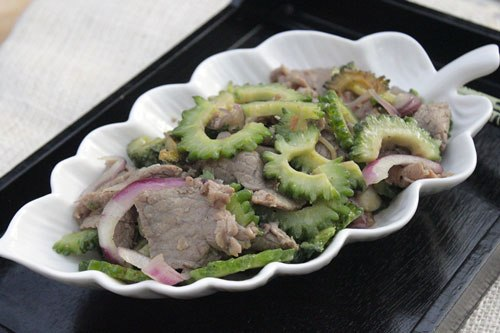

Nguyên liệu:
- 2 quả mướp đắng
- 250g thịt bò thái lát mỏng
- Nửa củ hành tây tím
- Muối, hạt nêm, dầu hào, bột năng, dầu ăn, hành khô và hạt tiêu
- Hành lá.
Cách làm:
Bước 1:
- Thịt bò cho ra bát, thêm một thìa nhỏ muối, một thìa nhỏ bột năng, một ít hạt tiêu và một thìa nhỏ dầu hào, trộn đều, ướp khoảng 30 phút.
Bước 2:
- Mướp đắng rửa sạch, bổ làm đôi, bỏ hạt.
Bước 3:
- Mướp đắng thái lát tầm 3 mm.
- Ngâm mướp đắng vào âu nước lạnh có pha một ít muối khoảng 30 phút, sau đó vớt ra rổ cho ráo nước.
Bước 4:
- Hành tím rửa sạch, thái lát mỏng.
Bước 5:
- Đun nóng chảo, thêm dầu ăn phi tỏi thơm, cho thịt bò vào xào vừa chín tới, đổ ra đĩa để riêng.
Bước 6:
- Dùng lại chảo đó, rưới thêm một ít dầu ăn cho mướp đắng vào xào nhanh tay lửa lớn với hành tây, nêm vào một ít muối, bạn có thể xào chín mềm hay chín tái tùy theo sở thích.
Bước 7:
- Cho thịt bò vào đảo cùng, nêm gia vị vừa ăn, tắt bếp thêm hành lá thái nhỏ vào, múc ra đĩa dùng làm món xào ăn với cơm.